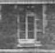

A Connecticut Yankee in King Arthur's Court
1889

picture courtesy of "Mark Twain in Elmira"
 |
Hartford, CT (site of actual writing) "Gentlemen: A friend of mine who is connected with an insignificant foreign government, officially, writes me to call upon you & inquire the cost of a Gattling gun complete, including duplicates of certain portions necessary (in a country where repairs will be impossible)." letter to Colt's Patent Fire Arms Manufacturing Company, 7.12.1872, New Saybrook, CT, as quoted in Mark Twain's Letters, Vol 5 "This present book (I mean the Yankee at King Arthur's Court) will be finished by the end of the year...when we leave for Hartford I shall have but 500 pages of MS finished--just 1/3 of the book--and in H. I shall not have the uninterrupted rush that I secure to myself here ['Quarry Farm']...I went back and read my 350 pages of MS through, yesterday, and found out that I am making an uncommonly bully book--and am swelled up accordingly." letter to Fred J. Hall and Charles L. Webster, 8.15.1887, Elmira, NY, as quoted in Mark Twain's Letters to His Publishers |
 |
"Quarry Farm", Elmira, NY (site of actual writing) "I want relief of mind; the fun, which was abounding in the Yankee at King Arthur's Court up to three days ago, has slumped into funeral seriousness, and this will not do--it will not answer at all. The very title of the book requires fun, and it must be furnished. But it can't be done, I see, while this cloud hangs over the workshop. I work seven hours a day, and am in such a taut-strung and excitable condition that everything that can worry me, does it; and I get up and spend from 1 o'clock till 3 A.M. pretty regularly every night, thinking--not pleasantly." letter to Charles L. Webster, 8.3.1887, Elmira, NY, as quoted in Mark Twain's Letters to His Publishers |
 |
London, England
(source of inspiration) "About
one thing there is no question whatever--& that is, one musn't
tackle England in print with a mere superficial knowledge of it. I am
by long odds the most widely known & popular author among the
English & the book will be read by pretty much every
Englishman--therefore for my own sake it must not be a poor book." letter to Olivia
L. Clemens, 10.12.1872,
London, England, as quoted in Mark
Twain's Letters, Vol. 5
"For the present we shall remain in this queer old walled town, with its crooked, narrow lanes that tell us of their old day that knew no wheeled vehicles...in the heart of Crusading times & the glory of English chivalry and romance...the hint here and there of King Arthur & his knights & their bloody fights." letter to Olivia Lewis Langdon, 7.20.1873, York, England, as quoted in Mark Twain's Letters, Vol. 5 |
Back to Huckleberry Finn | On to Pudd'nhead Wilson